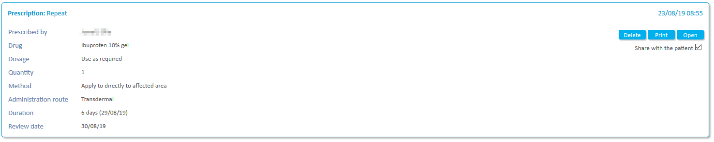
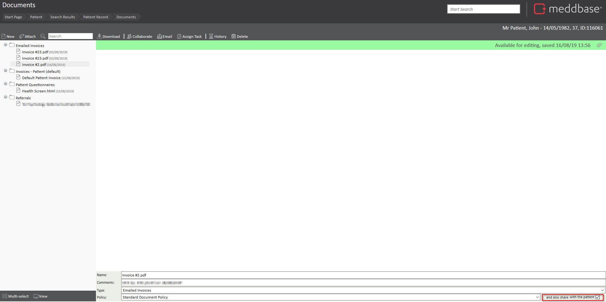
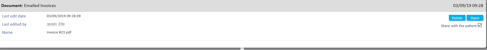
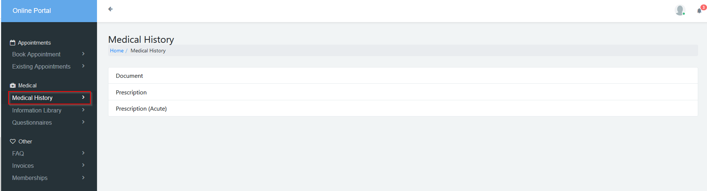
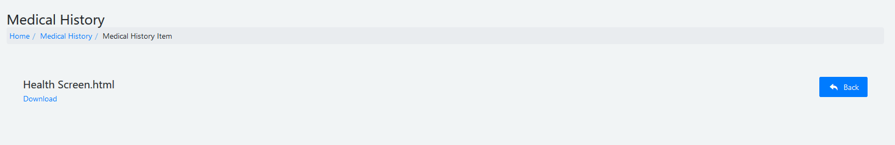
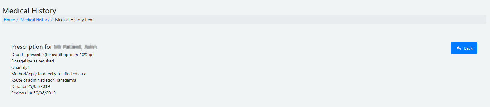

The patient ‘Medical History’ section gives a thorough summary of all clinical data recorded on a patient’s account. Any data recorded during appointments will appear here as well as any pre-appointment questionnaires completed by the patient and associated documents, such as invoices.
It is possible to share some of the medical history and associated documents with the patient using the patient portal you can do this from a few different areas of the patient record.
The purpose of this article is to guide users on how to access and manage a patient’s medical history and associated documents within the Meddbase system.
This article outlines:
You can view a patient's medical history by going to Patient > Patient Record > Medical History.
If a record can be shared with the patient it will have a checkbox called "Share with the patient". By default this won't be checked. Checking this box will make this record available to the patient on the patient portal.
This is available for some parts of the medical history e.g. prescriptions and documents e.g. invoices and patient questionnaires.

You can view a patient's medical history by going to Patient > Patient Record > Documents.
Here you can view all the documents associated with a patient and choose to share them with the patient via the portal.
You can do this by checking the box in the bottom right called "and also share with the patient".

You can also share documents and medical history by accessing them directly from an appointment.
The functionality is the same but medical history is accessed through Patient > Appointment > Consultation > Medical History and documents are accessed through Patient > Appointment > Consultation > Documents.

Patient's can access any data that's been shared with them through the patient portal.
When a patient logs into the patient portal they will have the option to view their medical history using the menu on the left.

They will then see the categories of data that have been shared with them and can drill down to view specific information or download specific documents.

